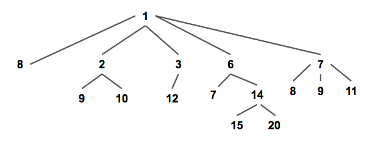
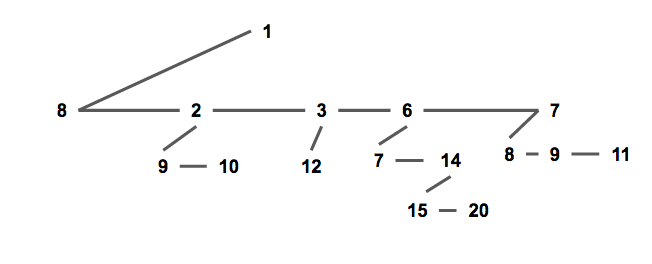
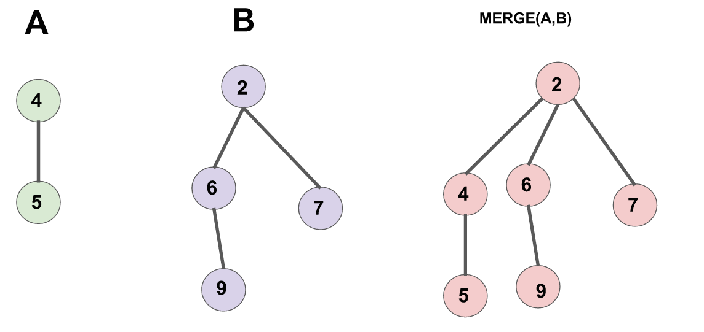
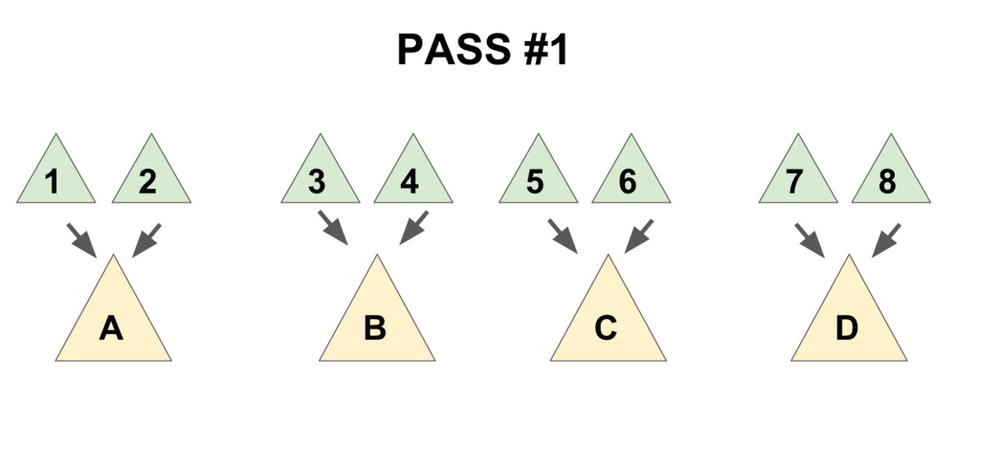
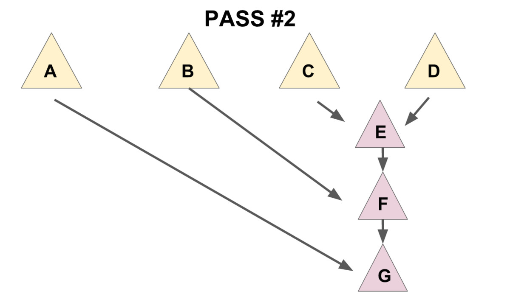

配对堆 create history
简介
配对堆是一个支持插入，查询/删除最小值，合并，修改元素等操作的数据结构，也就是俗称的可并堆。
配对堆在 OI 界十分的冷门，但其实跑得比较快，也很好写，但不能可持久化，因为配对堆复杂度是势能分析出来的均摊复杂度。
定义
这里给出一个较为简单的定义，严谨的定义可以查阅参考文献[4]。
配对堆是一棵带权多叉树（如下图），其权值满足堆性质（即每个节点的权值都小于他的所有儿子）。

通常我们使用左儿子右兄弟表示法储存一个配对堆（如下图），从下文可以看出这种方式可以方便配对堆的实现。

各项操作的实现
存储结构定义
就是普通的带权多叉树的表示方式。
1 2 3 4 5 | struct Node { T v; // T为权值类型 Node *ch, *xd; // ch为该节点儿子的指针，xd为该节点兄弟的指针。 //若该节点没有儿子/兄弟则指针指向虚拟空节点。 }; |
查询最小值
从配对堆的定义可看出，配对堆的根节点的权值一定最小，所以我们直接返回根节点就行了。
合并
配对堆的合并操作极为简单，直接把根节点权值较大的那个配对堆设成另一个的儿子就好了。（如下图）

复杂度的话，操作本身显然是 \(O(1)\) 的，考虑到对势能的影响后还是均摊 \(O(1)\)
1 2 3 4 5 6 7 8 9 10 | Node* merge(Node* a, Node* b) { // 若有一个为空则直接返回另一个 if (a == node) return b; if (b == node) return a; if (a->v > b->v) swap(a, b); // swap后a为权值小的堆，b为权值大的堆 //将b设为a的儿子 b->xd = a->ch; a->ch = b; return a; } |
插入
合并都有了，插入就直接把新元素视为一个新的配对堆和原堆合并就行啦。
删除最小值
到这里我们会发现，前面的几个操作都十分偷懒，几乎完全没有对数据结构进行维护，所以删除最小值是配对堆最重要的（也是最复杂）的一个操作。
考虑我们拿掉根节点之后会发生什么，根节点原来的所有儿子构成了一片森林，所以我们要把他们合并起来。
一个很自然的想法是使用 merge 函数把儿子们一个一个并在一起，这样做的话正确性是显然的，但是会导致复杂度退化到 \(O(n)\) 。为了保证删除操作的均摊复杂度为 \(O(\log n)\) ，我们需要：把儿子们两两配成一对，先用 merge 操作把被配成同一对的两个儿子合并到一起（见下图 1)，再按上述方法将新产生的堆暴力合并在一起（见下图 2）。
先实现一个辅助函数 merges ，作用是合并一个节点的所有兄弟。
递归版本的 merges（推荐）
实现上，推荐使用这种好写的递归式实现。
1 2 3 4 5 6 7 | Node* merges(Node* x) { if (x == node || x->xd == node) return x; //如果该树为空或他没有兄弟（即他的父亲的儿子数小于2），就直接return。 Node *a = x->xd, *b = a->xd; // a：x的一个兄弟，b：x的另一个兄弟 x->xd = a->xd = node; //拆散 return merge(merge(x, a), merges(b)); //核心部分 } |
最后一句话是该函数的核心，这句话分三部分：
merge(x,a)“配对”了 x 和 a。merges(b)递归合并 b 和他的兄弟们。- 将上面 2 个操作产生的 2 个新树合并。
迭代版本的 merges
迭代版本不仅不好写，而且实现不优越的话还不一定比递归版快（下面这个就是不优越的实现，跑的不比上面的递归版本快），所以更推荐写递归版。
1 2 3 4 5 6 7 8 9 10 11 12 | Node* merges(Node* x) { Node* t = x; x = x->xd; t->xd = node; while (x->xd != node) { Node *a = x->xd, *b = a->xd; x->xd = a->xd = node; t = merge(t, merge(x, a)); x = b; } return merge(t, x); } |
然后 delete-min 操作就显然了。（因为这个封装实在没啥用，实际在实现时中一般不显式写出这个函数）
1 | Node* delete_min(Node* x) { return merges(x->ch); } |
减小一个元素的值
要实现这个操作，需要给节点添加一个 father 指针，会使实现变得相对复杂。
首先节点的定义修改为：
1 2 3 4 5 | struct Node { T v; Node *ch, *xd; Node *fa; //新增：fa指针，指向该节点的父亲，若该节点为根节点则指向虚拟空节点 }; |
merge 操作修改为：
1 2 3 4 5 6 7 8 9 10 11 | Node* merge(Node* a, Node* b) { if (a == node) return b; if (b == node) return a; if (a->v > b->v) swap(a, b); a->fa = node; b->fa = node; //新增：维护fa指针 b->xd = a->ch; a->ch->fa = b; //新增：维护fa指针 a->ch = b; return a; } |
merges 操作修改为：
1 2 3 4 5 6 7 8 | Node* merges(Node* x) { x->fa = node; //新增：维护fa指针 if (x == node || x->xd == node) return x; Node *a = x->xd, *b = a->xd; x->xd = a->xd = node; a->fa = node; //新增：维护fa指针 return merge(merge(x, a), merges(b)); } |
现在我们来考虑如何实现 decrease-key 操作。
首先我们发现，当我们对节点 x 进行 decrease-key 操作后，以 \(x\) 为根的子树仍然满足配对堆性质，但 \(x\) 的父亲和 \(x\) 之间可能不再满足堆性质。
因此我们可以把整棵以 \(x\) 为根的子树剖出来，这样现在两棵树都符合配对堆性质了，再把他们 merge 起来就做完了。
这个操作本身复杂度显然为 \(O(1)\) ，但会破坏原有的势能分析过程，因此均摊复杂度难以证明（目前学术界还无法给出复杂度的精确值），通常可以简单的认为复杂度为 \(o(\log n)\) （注意这里为小 o）。
1 2 3 4 5 6 7 8 9 10 11 12 13 14 15 | // root为堆的根，x为要操作的节点，v为新的权值，调用时需保证x->v<=v //返回值为新的根节点 Node* decrease - key(Node* root, Node* x, LL v) { x->v = v; //修改权值 if (x->fa == node) return x; //如果x为根，就不用接下去的步骤了。 //把x从fa的子节点中剖出去，这里要分x的位置讨论一下。 if (x->fa->ch == x) x->fa->ch = x->xd; else x->fa->xd = x->xd; x->xd->fa = x->fa; x->xd = node; x->fa = node; return merge(root, x); //合并root和x。 } |
复杂度分析
见 配对堆的论文 。
参考文献
- HOOCCOOH 的题解
- 集训队论文《黄源河 -- 左偏树的特点及其应用》
- 《配对堆中文版》
- 维基百科 pairing heap 词条
- https://blog.csdn.net/luofeixiongsix/article/details/50640668
- https://brilliant.org/wiki/pairing-heap/ （注：本条目所有图片均来自这里）